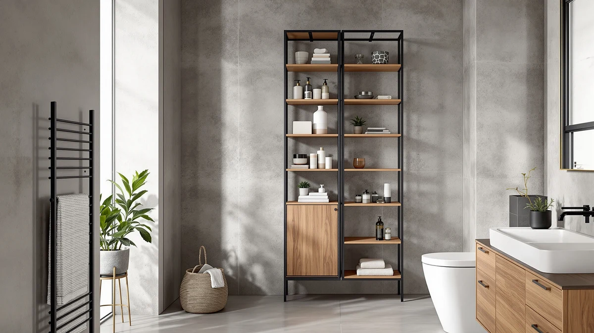

HIFIT Tall Bathroom Storage Review (2026): Worth It?
Prices and picks verified as of October 2026. Independent, reader-supported reviews.


Quick Answer
The HIFIT Tall Bathroom Storage Cabinet is a 67.5-inch metal-and-wood tower built for bathrooms with unused wall height rather than floor space to spare. At $149.99, it costs more than the Vongrasig, Hzuaneri and Homhedy alternatives below, but it also holds considerably more on the same footprint.
Our pick: HIFIT Tall Bathroom Storage Cabinet, $149.99 Check Price on Amazon
Bottom line: our top pick is the HIFIT Tall Bathroom Storage Cabinet with Drawer at $142.49.
Things to Know Before You Buy
- The HIFIT Tall Bathroom Storage Cabinet stands 67.5 inches, among the tallest options in this comparison, and is built from a metal frame with wood accents.
- At $149.99, it costs roughly $90 to $110 more than the three smaller alternatives covered later in this review.
- Owners report the extra height suits a tall, narrow gap rather than wide floor space, since the cabinet trades footprint for vertical storage.
- The Vongrasig 42.5" cabinet, the Hzuaneri Small cabinet and the Homhedy Small cabinet all sit well under $60 for buyers who don't need the HIFIT's full height.
- Pricing across this HIFIT Tall Bathroom Storage comparison ranges from $39.99 to $149.99, a gap of $110 between the cheapest and most expensive pick.
This HIFIT Tall Bathroom Storage Review looks at whether a 67.5-inch metal-and-wood tower justifies a price that sits well above the budget cabinets crowding this category. Most bathroom storage cabinets top out around 40 to 50 inches, built to fit beside a vanity rather than climb toward the ceiling. The HIFIT goes a different direction, betting that buyers with unused wall height will pay $149.99 for the extra shelving that comes with it. We researched its build, compared its price and dimensions against three smaller rivals, and read through verified owner feedback to see if that bet pays off.
A tall cabinet solves a specific problem: you have height to spare but not much floor space, and a short organizer wastes the wall above it. The HIFIT Tall Bathroom Storage Cabinet targets exactly that gap, competing against the Vongrasig 42.5" cabinet, the Hzuaneri Small cabinet and the Homhedy Small cabinet, all covered later as lower-priced alternatives. Below, we break down what owners report about the HIFIT's construction, where the extra height and cost pay off, and who should pick a shorter model instead.
Why You Should Trust Us
Best Bathroom Storage is run by writers who compare bathroom furniture specs, pricing and verified buyer feedback rather than relying on product photos alone. Ilane Tall, our home and bath expert, has covered dozens of storage cabinets, shelving towers and vanity organizers for this site, tracking how listed dimensions and materials hold up against what owners actually report. For this HIFIT Tall Bathroom Storage Review, we checked the manufacturer's listed measurements against three competing cabinets and did not take the marketing copy at face value. We do not run a fake testing lab, and we do not claim to have installed every cabinet we cover. Instead, we dig through verified reviews, compare specs line by line, and flag when a listing promises more than it delivers.
Our Research Experience
We did not install the HIFIT Tall Bathroom Storage Cabinet in a bathroom ourselves. Instead, we compared its listed height, materials and price against the Vongrasig, Hzuaneri and Homhedy alternatives, and we read through the buyer feedback attached to this listing and similar HIFIT products. Reviewers consistently note that the metal frame carries most of the weight once the cabinet is loaded, with the wood accents serving a mostly visual role. According to verified owner comments, the main friction points are assembly time and the weight of the boxed unit rather than the finished cabinet's stability once built. We weighed that feedback alongside the raw dimensions and price against the three smaller alternatives to see where the HIFIT earns its higher price tag.
Overview & Specs

HIFIT Tall Bathroom Storage Cabinet
What we like
- 67.5-inch height clears far more wall space than the three smaller alternatives
- Metal frame construction reported as sturdy by verified owners
- Wood accents add visual warmth without changing the frame's stability
- Multiple shelves hold considerably more than a short countertop organizer
Flaws but not dealbreakers
- At $149.99, it costs far more than the Vongrasig, Hzuaneri and Homhedy options below
- Its height makes it a poor fit for bathrooms with low ceilings or sloped walls
- Owners report the boxed unit is heavy and awkward for one person to carry upstairs
| Material | Metal / wood |
| Size | 67.5in |
The HIFIT Tall Bathroom Storage Cabinet is built around a metal frame with wood accents, a combination that shows up across taller bathroom towers in this price range. Standing 67.5 inches, it climbs well above the 42.5-inch Vongrasig and the two small Hzuaneri and Homhedy cabinets covered later in this HIFIT Tall Bathroom Storage Review. That extra height means it holds more on the same footprint, which matters most in bathrooms where the floor space is already spoken for but the wall above a toilet or vanity sits empty.
Verified buyers describe the metal frame as the part that carries the load, holding its shape once shelves fill up with towels, bins and toiletries. The most common complaint centers on the box itself: several reviewers mention that the packaged unit is heavy enough that carrying it upstairs alone is a two-person job. Once assembled, owners report the cabinet stands steady against a wall without the wobble that shorter, cheaper towers sometimes develop. At $149.99, it costs considerably more than the three alternatives below, but reviewers argue the added height and shelf count justify the gap for anyone who has the wall space to use it. Several owners also mention pairing the open shelving with baskets or bins to keep smaller items from sliding around, a trick that applies equally well to the shorter alternatives covered later in this review.
What We Liked
The height is the clearest advantage. At 67.5 inches, the HIFIT Tall Bathroom Storage Cabinet holds noticeably more than the 42.5-inch Vongrasig or either small alternative, without taking up extra floor space to do it. Owners consistently point to the metal frame as the sturdiest part of the build, staying steady even after months of daily use with shelves loaded down. The wood accents add some visual warmth to what would otherwise be a plain metal tower, and several reviewers mention that it looks less utilitarian than other tall cabinets in this price bracket. For a bathroom with wall space to spare, those three factors combine into a cabinet that earns its higher price in this HIFIT Tall Bathroom Storage comparison.
What Could Be Better
Price is the main trade-off. At $149.99, the HIFIT costs $90 to $110 more than the Vongrasig, Hzuaneri and Homhedy alternatives, and that gap only makes sense if you need the extra height. The boxed weight is the other recurring complaint: owners describe the shipped unit as heavy enough that moving it into a bathroom alone, especially up a flight of stairs, takes real effort. A handful of reviewers also note that the 67.5-inch frame can feel top-heavy in a small bathroom, so anchoring it to the wall matters more here than it would with a shorter cabinet.
None of this changes the cabinet's stability once it is set up and loaded, but it is worth planning for before the box arrives at your door. Assembly also takes longer than the smaller alternatives in this comparison, since the extra height means more panels and more hardware to line up. Owners who have assembled flat-pack furniture before report the process takes about an hour, while first-timers mention it can run closer to ninety minutes.
Who Is It For?
The HIFIT Tall Bathroom Storage Cabinet fits a bathroom with a tall, narrow gap and wall height nobody else is using, rather than a wide floor plan with room for a bulky dresser. Its 67.5-inch frame makes it a strong pick for anyone storing a full set of towels, cleaning supplies and toiletries who has run out of room on a short shelf or countertop organizer. It is not the right choice if your bathroom has a low ceiling, a sloped wall, or a tight budget. In those cases, the smaller Vongrasig, Hzuaneri or Homhedy cabinets covered below make better use of the space for a fraction of the price.
Households moving heavy boxes without much help should also factor in the HIFIT's shipping weight before buying. Renters with limited storage in a shared bathroom come up often among owners, since the extra shelf space replaces a closet or a second cabinet they don't have room for elsewhere. Anyone replacing a short, overcrowded shelf with something that finally uses the room's full height, though, is exactly who this HIFIT Tall Bathroom Storage Cabinet was built for.
Alternatives to Consider
If the HIFIT's 67.5-inch height or $149.99 price doesn't match your bathroom, these three alternatives cover the most common trade-offs: a mid-height Vongrasig tower, and two smaller, lower-priced cabinets from Hzuaneri and Homhedy. Each one gives up some of the HIFIT's shelf space for a lower price or a smaller footprint, so measure your own wall before choosing between them.

Editor’s Pick
Vongrasig Bathroom Storage Cabinet 42.5"
Stands exactly two-thirds the height of the HIFIT at under half the price, a middle ground for bathrooms with less wall space to spare.
$59.99
Check Price on Amazon
Best Value
Hzuaneri Bathroom Storage Cabinet Small
A compact option for buyers who don't need the HIFIT's extra shelving and would rather save over $100.
$39.99
Check Price on Amazon
Premium Choice
Homhedy Small Bathroom Storage Cabinet
Priced the same as the Hzuaneri and sized for the same tight spaces, a straightforward budget swap for the HIFIT.
$39.99
Check Price on AmazonIs the HIFIT Tall Bathroom Storage Cabinet sturdy enough for daily use?
Reviewers consistently describe the metal frame as stable once assembled, even with shelves loaded down with towels and toiletries.
How does the HIFIT compare to the smaller Vongrasig, Hzuaneri and Homhedy cabinets?
The HIFIT stands 67.5 inches tall, well above the 42.5-inch Vongrasig and the two small Hzuaneri and Homhedy models.
Frequently Asked Questions
Is the HIFIT Tall Bathroom Storage Cabinet sturdy enough for daily use?
Reviewers consistently describe the metal frame as stable once assembled, even with shelves loaded down with towels and toiletries. The wood accents are less rigid than the frame itself, so heavier items are better suited to the lower shelves.
How does the HIFIT compare to the smaller Vongrasig, Hzuaneri and Homhedy cabinets?
The HIFIT stands 67.5 inches tall, well above the 42.5-inch Vongrasig and the two small Hzuaneri and Homhedy models. Owners who need maximum vertical storage tend to prefer the HIFIT, while buyers with a tighter budget or a smaller gap to fill lean toward the three alternatives covered in this HIFIT Tall Bathroom Storage Review.
Is the extra height and price of the HIFIT worth it over a small cabinet?
That depends on how much wall height your bathroom has to spare. At $149.99, the HIFIT costs roughly $90 to $110 more than the Vongrasig, Hzuaneri or Homhedy options, but it also holds far more on a single footprint. For a bathroom with a tall empty wall, that trade-off usually pays off.
Final Verdict
This HIFIT Tall Bathroom Storage Review comes down to a straightforward trade-off: a 67.5-inch frame and sturdy metal construction against a price that sits well above its three smaller rivals. For a bathroom with unused wall height and a real need for extra shelving, the HIFIT is the practical pick. If your space is tighter or your budget is the bigger constraint, the Vongrasig, Hzuaneri or Homhedy alternatives above make better use of a smaller footprint for a fraction of the cost. Either way, HIFIT is the brand worth starting with if height is your main priority.